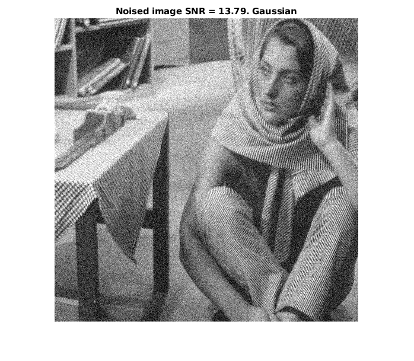
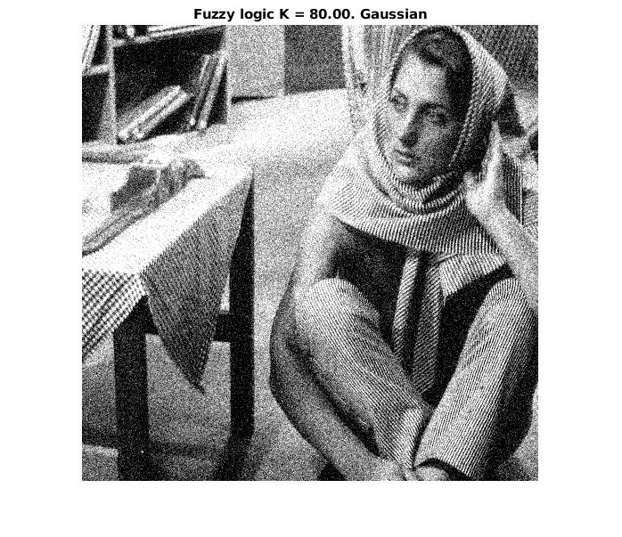

Contents
Task 1
clc; close all; clear;
I = imread('barbara.png'); figure; imshow(I); title('Original'); drawnow;
I_gauss = imnoise(I, 'gaussian', 0.03);
I_pepper = imnoise(I, 'salt & pepper', 0.03);
snr_gauss = snr(double(I), double(I_gauss) - double(I));
snr_peper = snr(double(I), double(I_pepper) - double(I));
figure; imshow(I_gauss); title([sprintf('Noised image SNR = %1.2f', snr_gauss), '. Gaussian']); drawnow;
figure; imshow(I_pepper); title([sprintf('Noised image SNR = %1.2f', snr_peper), '. Salt & Pepper']); drawnow;

Task 2. Arithmetic mean
clc; close all; clear;
I = imread('barbara.png'); figure; imshow(I); title('Original'); drawnow;
I_gauss = imnoise(I, 'gaussian', 0.03);
I_pepper = imnoise(I, 'salt & pepper', 0.03);
w_average = fspecial('average', 3);
I_gauss = imfilter(I_gauss, w_average, 'replicate');
I_pepper = imfilter(I_pepper, w_average, 'replicate');
snr_gauss = snr(double(I), double(I_gauss) - double(I));
snr_peper = snr(double(I), double(I_pepper) - double(I));
figure; imshow(I_gauss); title([sprintf('Arithmetic mean filter SNR = %1.2f', snr_gauss), '. Gaussian']); drawnow;
figure; imshow(I_pepper); title([sprintf('Arithmetic mean filter SNR = %1.2f', snr_peper), '. Salt & Pepper']); drawnow;
Task 2. Geometric mean
clc; close all; clear;
I = imread('barbara.png'); figure; imshow(I); title('Original'); drawnow;
I_gauss = im2double(imnoise(I, 'gaussian', 0.03));
I_pepper = im2double(imnoise(I, 'salt & pepper', 0.03));
gmean = @ (x) exp(imfilter(log(0.03 + x), ones(3,3), 'replicate')) .^ (1 / 3 / 3);
I_gauss = im2uint8(gmean(I_gauss));
I_pepper = im2uint8(gmean(I_pepper));
snr_gauss = snr(double(I), double(I_gauss) - double(I));
snr_peper = snr(double(I), double(I_pepper) - double(I));
figure; imshow(I_gauss); title([sprintf('Geometric mean filter SNR = %1.2f', snr_gauss), '. Gaussian']); drawnow;
figure; imshow(I_pepper); title([sprintf('Geometric mean filter SNR = %1.2f', snr_peper), '. Salt & Pepper']); drawnow;
Task 2. Median filter
clc; close all; clear;
I = imread('barbara.png'); figure; imshow(I); title('Original'); drawnow;
I_gauss = im2double(imnoise(I, 'gaussian', 0.03));
I_pepper = im2double(imnoise(I, 'salt & pepper', 0.03));
I_gauss = im2uint8(medfilt2(I_gauss, [3,3], 'symmetric'));
I_pepper = im2uint8(medfilt2(I_pepper, [3,3], 'symmetric'));
snr_gauss = snr(double(I), double(I_gauss) - double(I));
snr_peper = snr(double(I), double(I_pepper) - double(I));
figure; imshow(I_gauss); title([sprintf('Median filter SNR = %1.2f', snr_gauss), '. Gaussian']); drawnow;
figure; imshow(I_pepper); title([sprintf('Median filter SNR = %1.2f', snr_peper), '. Salt & Pepper']); drawnow;
Task 2. Midpoint filter
clc; close all; clear;
I = imread('barbara.png'); figure; imshow(I); title('Original'); drawnow;
I_gauss = im2double(imnoise(I, 'gaussian', 0.03));
I_pepper = im2double(imnoise(I, 'salt & pepper', 0.03));
I_g1 = ordfilt2(I_gauss, 1, ones(3, 3), 'symmetric');
I_g2 = ordfilt2(I_gauss, 3 * 3, ones(3, 3), 'symmetric');
I_gauss = im2uint8((I_g1 + I_g2) / 2);
I_p1 = ordfilt2(I_pepper, 1, ones(3, 3), 'symmetric');
I_p2 = ordfilt2(I_pepper, 3 * 3, ones(3, 3), 'symmetric');
I_pepper = im2uint8((I_p1 + I_p2) / 2);
snr_gauss = snr(double(I), double(I_gauss)- double(I));
snr_peper = snr(double(I), double(I_pepper) - double(I));
figure; imshow(I_gauss); title([sprintf('Midpoint filter SNR = %1.2f', snr_gauss), '. Gaussian']); drawnow;
figure; imshow(I_pepper); title([sprintf('Midpoint filter SNR = %1.2f', snr_peper), '. Salt & Pepper']); drawnow;
Task 2. Truncated median filter
clc; close all; clear;
I = imread('barbara.png'); figure; imshow(I); title('Original'); drawnow;
I_gauss = im2double(imnoise(I, 'gaussian', 0.03));
I_pepper = im2double(imnoise(I, 'salt & pepper', 0.03));
I_gauss = im2uint8(alphatrim(I_gauss, 3, 3, 4));
I_pepper = im2uint8(alphatrim(I_pepper, 3, 3, 4));
snr_gauss = snr(double(I), double(I_gauss) - double(I));
snr_peper = snr(double(I), double(I_pepper) - double(I));
figure; imshow(I_gauss); title([sprintf('Truncated median filter SNR = %1.2f', snr_gauss), '. Gaussian']); drawnow;
figure; imshow(I_pepper); title([sprintf('Truncated median filter SNR = %1.2f', snr_peper), '. Salt & Pepper']); drawnow;
Наилучшим образом с шумом типа "соль-перец" справились медианный фильтр и фильтр усредненного среднего, с гауссовым шумом практически все фильтры
справились почти одинаково.
Task 3
clc; close all; clear;
I = imread('barbara.png'); figure; imshow(I); title('Original'); drawnow;
I_gauss = imnoise(I, 'gaussian', 0.03);
I_pepper = imnoise(I, 'salt & pepper', 0.03);
I_noised = {I_gauss, I_pepper};
S = {'Gaussian', 'Salt & pepper'};
for i=1:2
PQ = paddedsize(size(I_noised{i}));
[U, V] = dftuv(PQ(1), PQ(2));
[D_0, gsnr] = fminsearch(@(x) -minSNR(x,I, I_noised{i}, U, V), 50);
H = exp(-(U.^2 + V.^2) / (2 * D_0 ^ 2));
F = fft2(I_noised{i}, size(H,1), size(H,2));
g = real(ifft2(H .* F));
g_gauss = g(1:size(I_noised{i}, 1), 1:size(I_noised{i}, 2));
figure; imshow(g_gauss,[]); title(['Gaussian high-pass filter ' sprintf('SNR = %1.2f, D_0 = %1.2f. ', -gsnr, D_0) S{i}]); drawnow;
end
ГФНЧ показал при работе с гауссовым шумом результаты чуть лучшие, чем все предыдущие фильтры. Шум типа "соль-перец" он устранил недостаточно хорошо.
Task 4
clc; close all; clear;
I = imread('barbara.png');
I_gauss = double(imnoise(I, 'gaussian', 0.03));
I_pepper = double(imnoise(I, 'salt & pepper', 0.03));
I = double(I);
[M, N] = size(I);
K = 80;
I_contrast = contrast(I, K); figure; imshow(uint8(I_contrast));title([sprintf('Fuzzy logic K = %1.2f. ', K), 'Original']); drawnow;
I_pepper_contrast = contrast(I_gauss, K); figure; imshow(uint8(I_pepper_contrast)); title([sprintf('Fuzzy logic K = %1.2f. ', K), 'Gaussian']); drawnow;
I_gaussian_contrast = contrast(I_pepper, K); figure; imshow(uint8(I_gaussian_contrast)); title([sprintf('Fuzzy logic K = %1.2f. ', K), 'Salt & pepper']); drawnow;

Task 4. pout.tif
clc; close all; clear;
I = double(imread('pout.tif')); figure; imshow(I, []); title('Original'); drawnow;
K = 50;
I_contrast = contrast(I, K);
figure; imshow(uint8(I_contrast)); title([sprintf('Fuzzy logic K = %d ', K)]);
figure; imshow(histeq(uint8(I))); title('histeq');
Фильтр на основе нечеткой логики позволяет получить более визуально приятное изображение по сравнению с эквализацией гистограммы, так как в
этом случае гистограмма сохраняет свою форму.